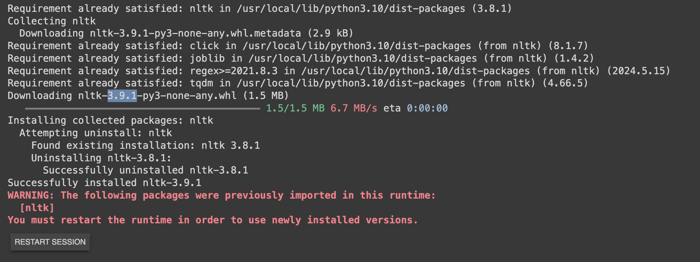

Tokenization
Tokenization
Introduction
{kind=link}
- Language models have a limit on how much text they can handle at once, known as their context window. While these limits are expanding, research shows that LLM's often perform better when provided with less, but more relevant, information. However, selecting the most relevant information is straightforward for humans but challenging for computers.
A common approach to manage large amounts of data is to break it down into smaller, more manageable parts; this is a process often referred to as Tokenization or Chunking. Tokenization is a key step in this process, where raw text is divided into smaller units, called tokens, which can then be processed by a neural network.
{kind=link}
In order to do this you need to pick a chunking/Tokenization strategy. Just to name a few:
-
Word-Based: A simple and straightforward method that most of us would propose is to use word-based tokens, splitting the text by spaces.
-
Character based tokenization: Individual words are considered as tokens . Lot of computing resources needed as now e.g for a 3 word serentence where you might need 3 tokens now 15 – 20 tokens needed
-
Sentence Based: We need a .(fullstop) for it to work
Note: We've all heard of GPT and OpenAI. They utilize a tokenization method called Byte Pair Encoding (BPE), which is a middle ground between word-based and character-based tokenization. In BPE, words are broken down into smaller character sequences that the model encountered during training, allowing it to make informed predictions.
{kind=link}
Historically, applications perform better when they are provided with your own data. However, you can't feed unlimited data to your LLMs due to two key limitations:
-
Context window limit: LLMs have a finite context window for processing data.
-
Signal-to-noise ratio (SNR): LLMs perform better when the SNR is high, meaning the information provided is useful, relevant, and clear. Clear, unambiguous instructions help the model deliver more accurate and detailed results, while ambiguous or complex inputs can lead to less accurate or incomplete outputs.
As noted, chunking or splitting refers to breaking your data into smaller, manageable pieces.
{kind=link}
Tokenization LAB
Log into the Lab Environment

- Open Google Colab and create a new notebook. Click on "File" > "New notebook".
Note
Please refer to the following section to create Google Colab account.

- Make sure you are connected to a runtime. For this task, you can use the CPU as the runtime environment.

Reminder: Whenever you want to copy the code in Google Colab and run it, be sure to click on + Code to add a new code cell.

Reminder: Click the play button to the left of the code, or use the keyboard shortcut "Command/Ctrl+Enter" while the cell is selected.

We will create Chunks of 35 characters, so first 35 characters as chunk 1 ,next 35 characters chunk2 and so on
1 2 3 4 5 6 7 8 9 10 11 12 13 14 15 | |
Note
The image below is provided to highlight the code and help you understand how chunking works. Not an actual output from print(chunks) command.
{kind=link}
Note
Please note that the image above is not generated directly from our code. It has been included as a visual aid to help you better understand the concept of tokenization and chunking. The text contained a total of 522 characters, divided into 15 chunks. Problem with the above chunking technique is that it got split at 'includ'. How do we know when to chunk? Before we look into that. Lets look into Langchain Splitter.
{kind=link}
Note
To proceed, use the same Colab notebook you created earlier. Simply add a new code cell by clicking the '+ Code' button and paste the code below.
- Let's retrieve the langchain library from the Python Package. In the example below, we'll configure the chunk_overlap parameter, which ensures that our chunks are blended together. Meaning the end of chunk 1 will overlap with the beginning of chunk 2. Please copy the below command in Colab and press run to execute each cell individually.
1 | |
{kind=link}
1 | |
1 2 3 4 5 6 7 | |
Note
Seprators are characters sequence you wanna split on. The image below is provided to highlight the code and help you understand how chunking works.
{kind=link}
In the previous example, when we used character Splitting, we split the text based on a fixed number of character. Specifically, we divided the text into chunks of 35 characters each.
However, with Recursive Text Splitting (RTS), the process is more dynamic and considers the physical structure of the text to determine the appropriate chunk size.
Here’s how RTS works:
-
Instead of relying on a static number of characters, RTS examines the structure of the document.
-
It begins by identifying the largest logical divisions, such as paragraphs, and splits the text at each double newline (indicating paragraph breaks).
-
If any of these chunks are still too large, RTS will then move to the next level of separation, which is single newlines (often indicating sentences or list items).
-
If necessary, it will continue to break down the text further, using spaces and eventually individual characters as separators.
With RTS, you don’t need to manually specify the chunk size by character count. You can simply pass your text to the RTS process, and it will intelligently determine how to split the text based on its structure, resulting in chunks that are logically organized and more contextually meaningful. In the example below, we provide a chunk size, but you can omit the chunk-size command if you prefer.
{kind=link}
Note
To proceed, use the same Colab notebook you created earlier. Simply add a new code cell by clicking the '+ Code' button and paste the code below.
1 | |
1 2 3 4 5 6 | |
Note
We avoid splitting in the middle of words by using spaces as one of the separators, ensuring that each chunk ends on a complete word. This is crucial because RCS (Recursive Character Splitting) helps maintain the context within sentences by keeping related words together. The image below is provided to highlight the code and help you understand how chunking works.
{kind=link}
Note
If you're new to AI, I would personally recommend starting with Recursive Text Splitting (RTS).
So far, we've been working with splitting regular text. But what if we have markdown files or PDF or Python documentation? There's a better way to handle those cases, and that's where specialized document splitting comes into play.
PDFs often contain tables and other structured data that can be challenging to split accurately using character-based methods. For PDFs, it's important to extract and chunk all elements, including tables, effectively. We'll accomplish this using the Unstructured library, which is specifically designed for handling such tasks. If you have a large collection of PDFs, Unstructured is an excellent tool to manage them efficiently.
Note
There are multiple libraries available for handling PDF extraction, but in this lab guide, we will use the Unstructured library.
{kind=link}
Note
Before proceeding, I highly recommend opening a new Colab notebook. Once done simply click the "+ Code" button to add a new code cell, then paste the code provided below. Also, ensure you’re connected to your runtime environment as outlined in the previous steps. Please remember to let each cell finish executing before moving on to the next one.
- Install relevant libraries including Unstructured
1 | |
{kind=link}
Note
You will be asked to restart your notebook. Click on Restart Session.
1 | |
{kind=link}
- We will upgrade nltk to version 3.9.1
1 | |
{kind=link}

-
Let's load our PDF files into Google Colab. For this example, we can use the Cisco Financial Results. Please Download the file here as we will be using in the next step. You can open the pdf to go through the file.
-
In Google Colab, click on the Folder tab. Right click and select New Folder to create a folder named "data."

- On your newly created 'data' folder, click [...] then select Upload.
{kind=link}

- Choose your CiscoReport.pdf file and click Open
{kind=link}
- We'll use the following code from the Unstructured library to demonstrate how tables can be extracted
Note
1 2 3 4 5 6 7 8 9 10 11 12 13 14 15 16 | |
{kind=link}
- Lets grab element 37, as its the one where our table is
1 | |
Note
If you run the command elements[37].metadata.text_as_html and the output is blank, search through the elements to locate where the first "table" field is defined. Look for the keyword unstructured.documents.elements.Table to identify which row contains your table data. As shown in the above image, the table element is located at unstructured.documents.elements.Table in a specific memory location. In this case, the table appears at row 37, but if the command does not work, manually check the positions where tables are stored. Keep in mind that indexing starts from 0, so row 37 refers to the 38th element in the list.
OUTPUT - Example
Note
You can copy the below HTML snippet or use the actual HTML output you received from your element.
'<table><thead><tr><th>Revenue</th><th>$8.51 - $8.53 Billion</th><th>$34.5 - $34.7 Billion</th></tr></thead><tbody><tr><td>Y/Y Growth</td><td>~10%</td><td>~10%</td></tr><tr><td>FX Impact)</td><td>no impact</td><td>no impact</td></tr><tr><td>GAAP Operating Margin</td><td></td><td>~11.4%</td></tr><tr><td>Non-GAAP Operating Margin’)</td><td></td><td>~28.0%</td></tr><tr><td>GAAP Earnings per Share?)</td><td>$0.79 - $0.80</td><td>$2.67 - $2.69</td></tr><tr><td>Non-GAAP Earnings per Share()</td><td>$1.89 - $1.90</td><td>$7.41 - $7.43</td></tr><tr><td>Operating Cash Flow Growth (Y/Y)°)</td><td></td><td>16% - 17%</td></tr><tr><td>Current Remaining Performance Obligation Growth (Y/Y)</td><td>~10%</td><td></td></tr></tbody></table>'
- Tables are straightforward for humans to read, but they aren't as easy for language models to interpret. Language models are typically trained on HTML tables, so when you pass HTML-formatted tables to an LLM, it will better understand the structure and content. You can paste the HTML into an HTML viewer to see how it looks.
{kind=link}
Note
That's how you handle tables within a PDF. Please note that the image above may appear slightly different.
What if a PDF or other document contains images? How can you extract them? We'll use the Unstructured library again to handle this.
Note
To proceed, use the same Colab notebook you created earlier. Simply add a new code cell by clicking the '+ Code' button and paste the code below.
- Install relevant libraries
1 2 3 | |
1 2 3 4 5 6 7 8 9 10 11 12 13 14 15 16 17 18 19 20 21 22 23 | |
Note
You'll notice that a folder called 'figures' is created, where all the extracted images are stored. Also if you get a warning it's just an informational message from the unstructured library letting you know that you haven't explicitly specified a language for text processing, so it's defaulting to English. If you want to remove the warning and be explicit, you can pass the languages parameter like this: languages=["eng"] after the combine_text_under_n_chars=2000.
{kind=link}
- You can view the image by double clicking it
Note
After extracting images from a PDF or any other source, you can use the below method to send them to a multimodal model like GPT-4o to understand and generate insights about the images. This approach allows you to combine textual and visual data for a richer understanding of the content.
- Set OpenAI token - MultiModal
Important
If you've followed the lab instructions, the OpenAI API keys will be available in your demo Gmail account or the .txt file you have downloaded. That we will be using. If not, you can create an account and obtain the keys from the OpenAI official website. The below info is for information purpose only
- Create a new project API key by browsing to API Keys web page. Select Create new secret key. The API key is automatically generated. Save the API Key as we will be using it in the later steps . The below API key is for reference only . Also when creating an API key run with default settings.
{kind=link}

- Within your existing Google Colab notebook navigate to the new “Secrets” section in the sidebar.

-
Click on “Add a new secret.” Enter the name example: OPENAI_API_KEY and value of the secret(the API key sent to the tmedemouserX account or the .txt file you have downloaded). Note: The name is permanent once set.
-
The list of secrets is global across all your notebooks.
-
Use the “Notebook access” toggle to grant or revoke access to a secret for each notebook.

Important
Since ChatOpenAI has been deprecated in LangChain, we will use the langchain-openai package instead. Run the following command to update:
1 | |
Important
Let's import and load the envoirnment variables in the same notebook
1 2 3 4 5 6 7 8 9 10 | |
Important
Incorporating Secrets into your Code. We'll use this later in the lab. Since GPT-5 was recently released, feel free to switch from GPT-4o to GPT-5.
1 2 3 4 | |
Important
Function to Convert Image to Base64:
1 2 3 4 5 6 7 8 9 | |
Note
This is the image that was extracted from our data and saved in the Figures folder.
- Lets see our base64-encoded image
1 | |
/9j/4AAQSkZJRgABAQAAAQABAAD/2wBDAAgGBgcGBQgHBwcJCQgKDBQNDAsLDBkSEw8UHRofHh0aHBwgJC4nICIsIxwcKDcpLDAxNDQ0Hyc5PTgyPC4zNDL/2wBDAQkJCQwLDBgNDRgyIRwhMjIyMjIyMjIyMjIyMjIyMjIyMjIyMjIyMjIyMjIyMjIyMjIyMjIyMjIyMjIyMjIyMjL/wAARCAB1AOkDASIAAhEBAxEB/8QAHwAAAQUBAQEBAQEAAAAAAAAAAAECAwQFBgcICQoL/8QAtRAAAgEDAwIEAwUFBAQAAAF9AQIDAAQRBRIhMUEGE1FhByJxFDKBkaEII0KxwRVS0fAkM2JyggkKFhcYGRolJicoKSo0NTY3ODk6Q0RFRkdISUpTVFVWV1hZWmNkZWZnaGlqc3R1dnd4eXqDhIWGh4iJipKTlJWWl5iZmqKjpKWmp6ipqrKztLW2t7i5usLDxMXGx8jJytLT1NXW19jZ2uHi4+Tl5ufo6erx8vP09fb3+Pn6/8QAHwEAAwEBAQEBAQEBAQAAAAAAAAECAwQFBgcICQoL/8QAtREAAgECBAQDBAcFBAQAAQJ3AAECAxEEBSExBhJBUQdhcRMiMoEIFEKRobHBCSMzUvAVYnLRChYkNOEl8RcYGRomJygpKjU2Nzg5OkNERUZHSElKU1RVVldYWVpjZGVmZ2hpanN0dXZ3eHl6goOEhYaHiImKkpOUlZaXmJmaoqOkpaanqKmqsrO0tba3uLm6wsPExcbHyMnK0tPU1dbX2Nna4uPk5ebn6Onq8vP09fb3+Pn6/9oADAMBAAIRAxEAPwD3+iiigAoopKAFopKWgCKVtkTP6DNeT3Gs39xeG6+0yK2cqFbAUegFeq3P/HtL/un+VeNjpXqZbCMuZtHzmfVZx5Ixdtz1fQrx9R0a3uZBh2BDY7kHGf0rUrD8Jf8AItWn/Av/AEI1t9K86qkqkku57mGk5UYSe7SHUUZpKg3FooooAKKKKACiiigAooooAY5wpPpXk13rN7dXxuftDoQ3yBWICjsMV6vL/q2+leMn7x+tenlkIycm0fO59UnFQUXbc9U8PXsmpaLBcSgeYcq2O5Bxn9K1RzWB4M/5FuD/AH3/APQjW/0rgrJRqSS7ntYSTlQhKW7SHUUlLWZ0BRRRQAUUUUAFFJuHrS0ANP8AKue8SeIG0VY44Yw88oJG77qgd66GuC8e/wDIQtf+uZ/nXThKcalZRlsefmdadHDSnB2ZpeHPFEuqXJtLmNBLtLI6cA47YrrK8y8Hf8jFF/uN/KvSx2p42lGnVtHYzynEVK+H5qju07DLn/j1l/3T/KvGe1ey3P8Ax6y/7h/lXjXauzK9pfI83iD4qfz/AEPT/CX/ACLVr/wL/wBCNblYfhL/AJFq1/4F/wChGtyvOr/xZerPdwn8CHojnvEmvto0MaQxq88udu48KB3PrVPw74ol1S6+y3UaLKVLIyZAOOxFZ3jz/j/tP+ubfzrN8Jf8jHb/AEb/ANBNd8cPTeF52tTxKuOrRzD2Sfu3Sseo0UUV5Z9IFFN3D1p1ACVgeI/EA0WJEjj8yeUEqD0AHc1v1wXj3/j+tP8Acb+YrowlONSqoy2ODMq86GHlOG5c0DxXNf3y2l4iB5M7HjBAzjOCK7HFeU+Gf+Rjs/8AfP8A6Ca9VrTHUo06iUVbQwyjEVK9Fuo7tMST/Vt9K8XP3j9a9ok/1bfSvFz94/WurK95fI8/iD/l38/0PS/Bv/Itwf77/wDoRrf71geDf+Rbg/33/wDQjW/Xn4j+LL1PcwX+7w9EYXiLXf7FtUZEDzSkhFPTjqTWX4f8Vz6hfrZ3scYaTOx4wQMjnBBJqDx/9+x/7af+y1heGv8AkY7L/fP/AKCa7qWGpywrm1rqeLicdWhj1Ti/dulb1PVRS0lLXln0gUUhIoyPWgLnj02p3txctcPcy+YW3ZViMfT0r07Qrt73RrWeXmRl+Y+pBxmvJq9T8L/8i5Z/7p/ma9jMqcYwjZHy2R1ZyrTUne6v+JsmuB8e/wDIQtf+uZ/nXfGuA8e/8hC1/wCuR/nXHgP46PUzn/dJfL8yj4O/5GKL/cb+VemV5n4O/wCRii/3G/lXplXmX8b5GWQ/7s/Vkdz/AMesv+4f5V4z2r2a5/49Zf8AcP8AKvGe1b5XtL5HFxB8VP5/oen+Ev8AkWrX/gX/AKEa3Kw/CX/ItWv/AAL/ANCNbledW/iy9We/hP4EPRHA+Pf+Qhaf9c2/nWb4S/5GO3+jfyNaXj3/AJCFp/1zb+dZ3hL/AJGOD6N/KvXp/wC5/JnzFf8A5GnzR6fUcz+XE74ztUnFSVDdf8esv+4f5V4i3PrJu0WeS3GqXt1cNcyXMokY5+VyNv09BXpfh+6kvtDtZ5WzIykMfUgkZ/SvKB0FeoeE/wDkXLT6N/6Ea9fMIRVKNl1PmclqzliJqTvdfqbhrg/H3/H9Z/8AXNv5iu8NcH4+/wCP6z/65t/MVxYH+Oj1c4/3SXyMbwz/AMjHZ/75/wDQTXqgryvwx/yMdl/vn/0E16pW2Z/xV6HNkP8AAl6/ohJP9W30rxc/eP1r2iT/AFbfSvFz94/Wtcr3l8jm4g/5d/P9D0vwb/yLcH++/wD6Ea3+9YHg3/kW4P8Aff8A9CNb/evOxH8WXqz3MF/u8PRHD+P/AL1h/wBtP/ZawfDX/Ix2X++f5Gt7x/8AesP+2n/stYXhn/kY7P8A3z/6Ca9bD/7m/RnzOM/5GS9V+h6qKbI21GPoM06mS/6t/wDdNeItz66WkTyO61W9u7t7h7iQOxyArkBfYVL/AG/rH/P9J+f/ANas7tS19PGlTcVdI/PZ163O2pP7zuZ/AkL3fmR3TJATkxBckewP/wBauqtLWOztY7eFdsca7VHtU4o6187Ur1KiSm72Pu6OEo0JOVONmxO9Y2uaDDrcS73Mc0edjjnGexFbVFZwnKEuaL1NatKFWDhNXTOe0LwxDo8jTtKZZyCobGAB7CuhFFLTqVJVJc0ndio0KdGHJTVkQ3P/AB6y/wC4f5V4x2r2l1DoVPQjFeez+CdQS6KwPE0BJw7HG0e4/wAK9DL60KfMpux4udYWrW5HTje1zqfCX/ItWv8AwL/0I1t9ao6XYrp2nQ2ifMI1wT6nqT+dXh1rz6slKba7nsYeDhSjGW6SMjXNCh1mBVdzHKmdjgZxn1HcVW0PwvHpErTvL585G0Nt2hR7CuhPTrQOnWqVaoociehMsJRlV9q4+93FprDIII4NOorM6TjbnwLDLeGWG5MUDHJi2ZI9gc11NnaRWNpHbwLtjjXCirFFaTrVKiSk72OajhKNGTlCNmwrH1rQ4NahVZCUlTOx17Z9R3FbFFTGTg+aO5rUpwqxcJq6ZzWh+E4tKuPtEk3nSjIQ7doX3x610tFFFSpKo+aTuyaNCnQjyU1ZDJP9W30rxg/eP1r2dxlT7159deCtQW8K27RPAzEh2bBUe4/wrvy6tCm5c7sePnWFq1lB043tc6Twb/yLcH+8/wD6Ea3+tUNIsF0zTYbVTu2DlvUnk/rV+uGrJSqSkurPWwsHCjGEt0kZetaLBrNqIpSUdDlJF6qf6is7RPCkelXP2qSczTDIQhdoXPtzzXTGk7VSrVFDkT0FPCUZ1VVlH3l1FoIyMUtFZHScdeeB4J70yw3LRRMctHtzj6GrH/CDaZ6z/wDfyunpa6FiqqSXMcH9m4a7fItRaKKK5zvCiimk4+lAAeKBzWTdeJNJtWKSXiFgcFUy3P4VWXxjo7HBuHX3Mbf4VoqFRq6izmljKEXZzV/U3/wpe1UbHU7PUVY2s6S7cbtp5GfUVezxUNNOzN4yjNc0XdCDpR0HSsy51/TbOd4JrpElT7ykHjjNS2Wq2WolxaTrKUxuwDxmm4TSvbQhV6TlyKSv2uaFFJmkLAVJqB4oHNY9z4n0m1Yo92rMDgiMFsflUCeMNHc4Nw6+7Rt/hWioVWrqLOaWLoRdnNX9Tf8Awpe1U7LULXUEaS1nSVAcEr2NXBUNNOzN4yUleLugpD9KM1Tu9RtLEA3NxHHnpubBP0FCTbsglJRV5OxcPFA571gt4w0dGx9oZvcRtj+VTW3ibSbp1jju1DscBXBXJ/GrdColdxZhHGUJOymr+ptUUUZrM6RKafwqO4uIrWJpZ5FRF5LMcAVjy+LdHjbH2ksf9lGI/lVxpzl8KuY1MRSp/HJL1NwH3FOrCh8V6PMcC7CH/popUfmRitmKZJkDxsGUjIZTkGiVOUfiVh069Op8Ek/QloooqDUKKKKACiikoAjlkWKJpHIVVGST2Fea674kudUneOGRorQHCqDguPU/4V1PjS7aDRfLQkGZwhx6ck/yrzkDJAA9sV6uX0ItOpL5HzOd42amqEHbuA5IA6ngVO1ldom5rWdV9TGQP5V6NoOg2+mWqM0atcsoLueSD6D0Fbe1ewGaqpmajK0Y3RFDIXKClUnZs4rwCfmvv+2f/s1dxjiq8VtDDI8kcSI743MoALY6Z/OrB6V5tar7Wo59z38Jh3h6Kpt3seV+Kf8AkZLv6r/6CK2vAP8Ar7//AHU/9mrF8U/8jHd/Vf8A0EVteAP9fff7qf1r1q/+5/JHzOE/5Gfzf6ncYwRXB+M9XmN7/Z8MjJEigybTgsT2Ptiu9PNeZ+LrZ4PEEsjAhJlVlPY4GD/KuDARjKt7x7GdVJww/udXqY1vbT3UwigiaSQ9FUc1pHwtrQTd9ib6B1z/ADqrpOpSaVfC5jRXOCrK3cHGfp0rtrLxpp9wQlwr27ercr+Yr08TVxFN/u43R4WAw+ErRtVm1Ib4MsrmytLmO5heJjLkBhjIwK6roKiilSVA8bqyMMgqcgipGOFJ9K8SrNzm5PqfW4elGjSUIu6RzPifxEdNjFtakfaZBknrsHr9a8+mmluZWlmkeSRurMck1PqN219qNxctn945I9h2H5VseFNDh1SeSe5y0EJA2f3m9/b/ABr2qUIYWjzy36nyeIq1swxPs4PTp29TCitp7jPkwSSY67EJ/lU9lG8WrWiSoyN56cMMH7wr1qOCOFAkcaqo6BRgCmyW0E2PMiR9pyNyg4Ncssyvdcuh6MMh5bNT1XkSqOB9Kzta1aLSLFp3wzH5Y0/vN6VpV5z41vHm1gWxb93AgwP9o8k/yrjwtH21VRex6eYYl4bDua32Rjahqd3qc5lupi/ov8K/QVWSN5W2xozt1woyav6Hpn9rapHbsSIgN0hHXaP/AK+K9QtbK3soFht4URF7Afzr1cRi4Ya0II+cweX1MdepOVl33bPH3R42KujKw7MMGr+l61e6VMrQSEx5+aJvun/CvTNQ0u11G3MVxErA9D3H0PavLdRs20/UJ7VjkxtgHGMjqD+Rp0MTDFJwkhYvBVcvkqkJadz1TTdQh1GyjuYfusOh6qe4PvV3PWuD8C3pW5uLMn5WXzB7EcH+Y/Ku8ryMRS9lUcD6jA4n6xQjUe/UWiiisDsCiiigDkfHULHS4ZBnCy8/iDXBI2x1bGcEGvXNVsI9S06a0k4Djg+h7H868pvLOexupLeddsiH8CPUe1e1l1SMqbpvdHyeeUJQrqstn+Z61Y3Ud5ZxTwtlHUMKsivKNL1290jKwOrRE5McnI/D0rafx5cmPCWSB/UuSPyxXJUy+qpe7qj0aGdUHTTqaM72l9a5fwnrN5q0t2bllwmzYqjAGc5/lXUVx1KbpycJbnq0K8a9NVIbM8r8U/8AIyXf1X/0EVteAP8AX33+6n9axfFP/IyXf1X/ANBFbXgH/X3/APup/wCzV7Nf/c/kj5XCf8jP5v8AU7mqGqaXa6pb+TdJuAOVYHBU+xq+a5XUfFw07U57N7QuIyMMrdcgHpj3rx6MJzl+73R9PiqtGnD998L0Mu+8D3MQZrO4WVeoVxhvz6fyrmbm1ns5jDcRtG46q3+ea7T/AITy1x/x5TZ+q1y+t6s2sXonMQiVF2KucnHXk17WFliea1VaHy2Pp4FR5qEtexr+DNTmjvxYO26KQEqD/CwGeK79xmNh6ivOfBlnJPri3AU+XApLN2yRgD9T+VekY4rzseoqt7p7WTOcsL7/AHdvQ8YliaCZ4nBDoxUg+oOK7HwLdxolzaMwEjOJFz1YYwcfl+tU/F+iSWt2+oQqWgmOXx/A3+BrmoZpLeZJYXZJEOVZTyK9NqOKoaP/AIc8BSnl+MvJbfij2fIxQfWvPrbxzeRR7bi2imI/iB2H8etOj8Y6jeahbwokcEbyqpwNzYJHc/4V5TwNZbo+hjnOGaVm7vyO/rzLxdGyeIpiejqrD6Yx/SvTR92uZ8W6K+oWq3MC7poQcqBy6+g96MFVVOsnLZ6FZth5V8M1HdanM+ELuO11wLIQBKhjBPY5BH8q9KVjk14uMqe4IP5Guhs/GWoWsSxSqk6qMAtkN+YruxmDnVlzwPHyrM4YeDpVdujPRywC5NeVeIbtLzXbqaMgpuCqR3wAM1a1HxXqF/G0S7YI2GCEPzEfWsNEaR1RAWZjgKByT6VWCwkqLc57kZpmMMUlSpbXOm8DwM+syTAfKkJBPuSMfyNeh4rB8MaOdK0797g3ExDv7eg/Ct/Nebi6qqVXJbHv5Zh5UMPGMt9xaKKK5j0AooooAQ1maro1nqsWLiP5l+668Mv0NFFOLad0Z1YRnBqSuee6too0648tZ969BlMH+dZYTPGaKK+koTk6auz4PE04xqtJaHeeCrMW0dxJv3GTbxtxjGf8a63tRRXhYt3rSPsctSWFiebeJLPzNfu28zGSvGP9kVreCbfyJb3592VTtj1oor0Kzf1T5I8fCwj/AGhe3VnZHpXmvim1/wCJ7cyb/vbeMdPlAoorky92qndnivh16mCV561r6PoS6ncBXuCig8gLnP60UV6+InKNJtM+ZwNOM6qUlc9D0/TrbS7bybaMKg5Pqx9Sav8AaiivnZNt6n3kIRhBKKI5IkmjKOoZWHIIyDXF614StYkkuLaVogvJjI3D8OeP1oorbC1JRmrM4swo06lP3lc4502tjOa1NF08z6nbnzduyRW+7nODn1oor3qzapM+Qw8IuutOp6qPu0GiivmT75bHMa54Zs73fcoTBP3ZBw31FcFcW/2eVk37sHGcYoor2cBUk002fK5zRpwneKsTWen/AGudY/NCBj125x+td9onh2z01fNUGWfH+scdPoO1FFTj6ktFfQvJqFNy5mtToBS0UV5B9QFFFFAH/9k=
Important
Initializing the Multimodal and sending the Image to GPT-4o for Analysis:
1 2 3 4 5 6 7 8 9 10 11 12 13 14 15 | |
- Retrieving the Response:
1 | |
Important
Output: The response from the model is stored in msg.content, which will contain the descriptive summary of the image.
The image is the logo of Cisco Systems, Inc., commonly known as Cisco. The logo features the company name "cisco" written in lowercase letters in a distinct, modern sans-serif font. Above the text, there is a series of vertical bars of varying heights, which is stylized to resemble the Golden Gate Bridge. The logo is rendered in a light blue color. The design is clean, professional, and easily recognizable, reflecting Cisco's identity as a major tech company specializing in networking hardware, telecommunications equipment, and other high-technology services and products.
Note
The description of your image may vary depending on the image retrieved.
👉 This concludes the task. Click the "Embeddings and Vector Database" Task on the left.